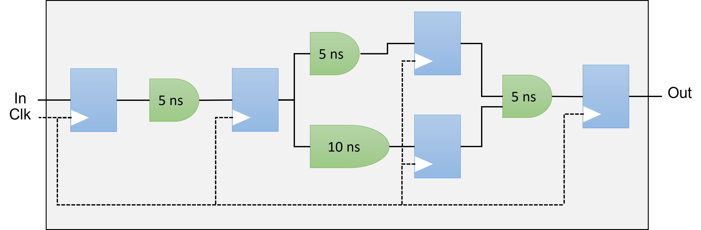
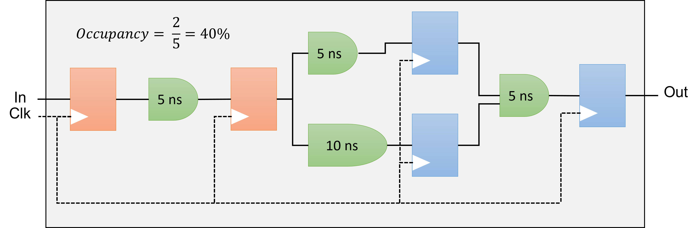

An FPGA (Field-Programmable Gate Array) is an integrated circuit designed to be configured by the user after manufacturing. It consists of an array of programmable logic blocks and a hierarchy of reconfigurable interconnects, allowing users to create custom digital circuits. FPGAs are known for their flexibility, enabling rapid prototyping and implementation of complex functions in hardware, making them suitable for applications in telecommunications, automotive, aerospace, and various other fields where custom and High-Performance Computing is needed.
FPGAs are a cheaper off-the-shelf alternative
Grid of configurable logic composed of:
Logic Element (LEs) or Adaptive Logic Modules (ALMs)
FPGA Development Boards and HPC (High-Performance Computing) FPGA Cards serve different purposes and have distinct characteristics:
FPGA Development Boards are primarily designed for learning, prototyping, and small-scale projects. They typically feature user-friendly interfaces, a variety of I/O options, and often include additional components like sensors, buttons, and displays. These boards are intended for engineers, students, and hobbyists to develop and test FPGA-based designs.
HPC FPGA Cards, on the other hand, are specialized for High-Performance Computing tasks. These cards are optimized for integration into data centers and High-Performance Computing environments. They focus on maximizing computational power, energy efficiency, and data throughput. HPC FPGA cards are usually designed to be mounted in servers or workstations, and they often support advanced features like high-speed memory interfaces and network connectivity.
Difference Between FPGA Development Boards and HPC FPGA Cards
Purpose: Primarily used for prototyping, learning, and development purposes.
Design: These boards typically come with various interfaces (like HDMI, USB, Ethernet) and peripherals (like buttons, LEDs, and sensors) to facilitate easy testing and development.
Flexibility: They offer a broad range of input/output options to support diverse projects and experiments.
Cost: Generally more affordable than HPC FPGA cards due to their focus on versatility and accessibility.
Target Audience: Suitable for students, hobbyists, and engineers working on initial project phases or small-scale applications.
Programming languages: VHDL, Verilog, System Verilog.
Specifications:
Logic Cells: 33,280
Block RAM: 1,800 Kbits
External memory: None
Purpose: Designed for High-Performance Computing (HPC) applications, focusing on accelerating compute-intensive tasks.
Design: Typically more powerful, with higher logic capacity, memory, and bandwidth capabilities. They often come with specialized cooling solutions and are designed to be mounted in server racks.
Performance: Optimized for tasks such as data center operations, machine learning, financial modeling, and large-scale scientific computations.
Cost: Generally more expensive due to their advanced features and high-performance capabilities.
Target Audience: Aimed at professionals in industries requiring significant computational power, such as data scientists, researchers, and engineers in High-Performance Computing sectors.
Hardware Description Language require a more detailed specification of the hardware, providing a gate-level or Register Transfer Level (RTL) description. They require knowledge of the specific hardware constructs, like registers, flip-flops, etc.
Productivity: typically takes more time as developers have to manually describe the low-level hardware details. This can result in more control and optimization but is generally more time-consuming.
Flexibility & Optimization: allow developers to describe hardware at a more granular level, there is usually greater opportunity for manual optimization of the design.
Learning curve require a deeper understanding of hardware concepts. Thus, there's a steeper learning curve, but it can provide more expertise in hardware design.
Use cases is used for more traditional hardware design, where control over implementation details and optimizations is critical.
High-Level Synthesis allows designers to describe hardware using high-level programming languages like C, C++, or SystemC. This means that HLS works at a higher level of abstraction, where developers can describe algorithms or logic without specifying the exact hardware details speeding up design. C/C++ code/kernels are translated to HDL using an offline compiler.
Productivity: offer faster development time since engineers can write code using familiar programming paradigms. Automated synthesis tools then translate the high-level code into RTL, allowing quicker prototyping.
Flexibility & Optimization: can accelerate development but it often provides less control over the final hardware implementation. This might result in less efficient utilization of FPGA resources or higher latency compared to hand-crafted RTL code.
Learning curve has a lower learning curve for software engineers or those familiar with C/C++. This makes it more accessible to developers who might not have a hardware background.
Use cases is often preferred for algorithm development, data flow designs, and when a software prototype exists that needs to be converted into hardware.
HLS and Kernel-based programming: from OpenCL to SYCL¶
The differences between Instruction Set Architecture (ISA) for CPUs and Spatial Architecture for FPGAs lie in how they process instructions and handle computation:
ISA for CPUs: Sequential, control-flow-oriented, with a fixed architecture using a predefined set of instructions. Suitable for general-purpose tasks.
Spatial Architecture for FPGAs: Parallel, data-flow-oriented, with a customizable architecture that can be tailored for specific high-performance tasks. Suitable for specialized, parallelizable workloads.
Difference between Instruction Set architecture and Spatial architecture
Made for general-purpose computation: hardware is constantly reused
Workflow constrained by a set of pre-defined units (Control Units, ALUs, registers)
Data/Register size are fixed
Different instruction executed in each clock cycle : temporal execution
Keep only what it needs -- the hardware can be reconfigured
Specialize everything by unrolling the hardware: spatial execution
Each operation uses a different hardware region
The design can take more space than the FPGA offers
The most obvious source of parallelism for FPGA is pipelining by inserting registers to store each operation output and keep all hardware unit busy.
Pipelining parallelism has therefore many stages.
If you don't have enough work to fill the pipeline, then the efficiency is very low.
The authors of the DPC++ book have illustrated it perfectly in Chapter 17.
Vectorization
Vectorization is also possible but is not the main source of parallelism but help designing efficient pipeline. Since hardware can be reconfigured at will. The offline compiler can design N-bits Adders, multipliers which simplify greatly vectorization. In fact, the offline compiler vectorizes your design automatically if possible.
Pipelining (see FPGA Optimization Guide for Intel® oneAPI Toolkits)
Pipelining is a design technique used in synchronous digital circuits to increase maximum frequency (fMAX).
This technique involves adding registers to the critical path, reducing the amount of logic between each register.
Reducing logic between registers decreases execution time, enabling an increase in fMAX.
The critical path is the path between two consecutive registers that has the highest latency, meaning it’s where operations take the longest to complete.
Pipelining is especially effective for processing a stream of data.
In a pipelined circuit, different stages can process different data inputs within the same clock cycle.
This design improves data processing throughput.

Maximum Frequency (fMAX)
The fMAX of a digital circuit is its highest possible clock frequency, determining the maximum rate for updating register outputs.
This speed is constrained by the physical propagation delay of the signal across the combinational logic between consecutive register stages.
The delay is affected by the complexity of the combinational logic in the path, and the path with the greatest number of logic elements and highest delay sets the speed limit for the entire circuit, often known as the critical path.
The fMAX is the reciprocal of this critical path delay, and having a high fMAX is desirable as it leads to better performance when there are no other restrictions.
Occupancy
The occupancy of a datapath at a specific moment signifies the fraction of the datapath filled with valid data.
When looking at a circuit's execution of a program, the occupancy is the mean value from the beginning to the end of the program's run.
Parts of the datapath that are unoccupied are commonly called bubbles, akin to a CPU's no-operation (no-ops) instructions, which don't influence the final output.
Minimizing these bubbles leads to greater occupancy. If there are no other hindrances, optimizing the occupancy of the datapath will boost throughput.

Occupancy: ⅖=40%
Each of the 20 MeluXina FPGA compute nodes comprise two BittWare 520N-MX FPGAs based on the Intel Stratix 10 FPGA chip. Designed for compute acceleration, the 520N-MX are PCIe boards featuring Intel’s Stratix 10 MX2100 FPGA with integrated HBM2 memory. The size and speed of HBM2 (16GB at up to 512GB/s) enables acceleration of memory-bound applications. Programming with high abstraction C, C++, and OpenCLis possible through an specialized board support package (BSP) for the Intel OpenCL SDK. For more details see the dedicated BittWare product page.
Intel Stratix 520N-MX Block Diagram.
The Bittware 520N-MX cards have the following specifications:
FPGA: Intel Stratix 10 MX with MX2100 in an F2597 package, 16GBytes on-chip High Bandwidth Memory (HBM2) DRAM, 410 GB/s (speed grade 2).
Host interface: x16 Gen3 interface direct to FPGA, connected to PCIe hard IP.
FPGA development BIST - Built-In Self-Test with source code (pinout, gateware, PCIe driver & host test application)
The FPGA cards are not directly connected to the MeluXina ethernet network. The FPGA compute nodes are linked into the high-speed (infiniband) fabric, and the host code can communicate over this network for distributed/parallel applications.
More details on FPGA can be found in the presentation below: